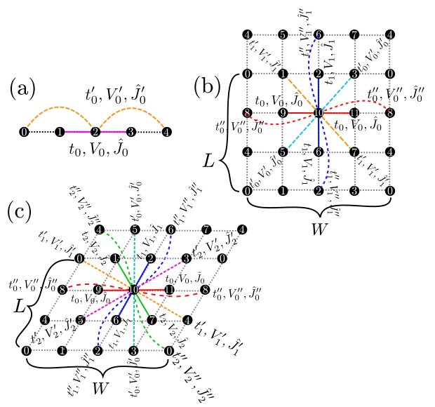
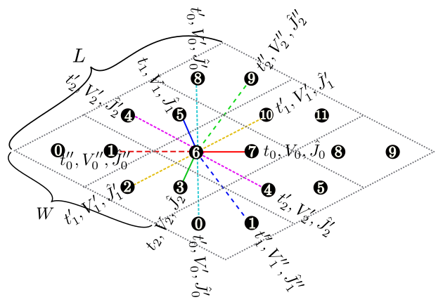
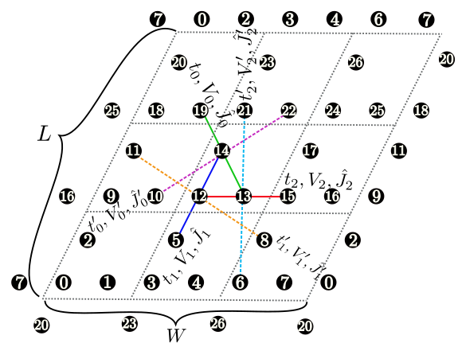
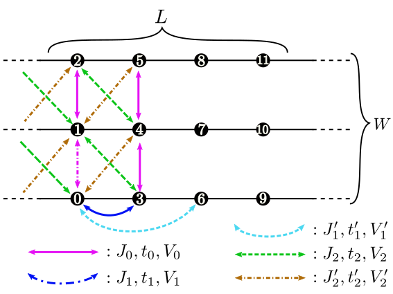
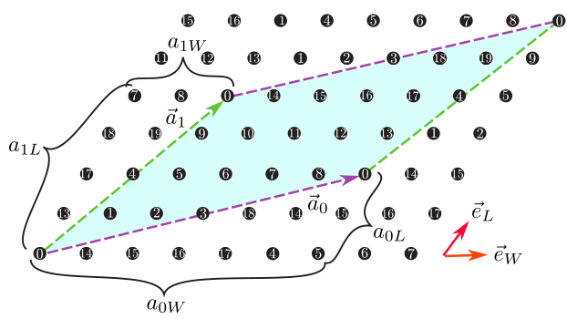

4.1.2. 格子に関するパラメーター¶
1次元鎖 [ 図 4.1 (a)]¶
L形式 : 自然数
説明 : 鎖の長さを指定します.
図 4.1 Figure 1: (a)1次元鎖、(b)2次元正方格子、(c)2次元三角格子の模式図. ホッピング積分、オフサイトクーロン積分、スピン結合は、 再近接サイト間(マゼンタの実線)ではそれぞれ\(t,V,J\)となり、 次近接サイト間(緑の破線)ではそれぞれ\(t',V',J'\)となります。
図 4.2 Figure 2: 2次元異方的蜂の巣格子の模式図. ホッピング積分、オフサイトクーロン積分、スピン結合は、 ボンドの方向によって異なります。
図 4.3 Figure 3: カゴメ格子の模式図.
図 4.4 Figure 4: 梯子格子の模式図.
梯子格子 ( 図 4.4 )¶
L形式 : 自然数
説明 : 梯子の長さを指定します.
W形式 : 自然数
説明 : 梯子の本数を指定します.
図 4.5 Figure 5: 三角格子において、\({\vec a}_0 = (6, 2), {\vec a}_1 = (2, 4)\)とした場合のセル形状。 \({\vec a}_0\)(マゼンタ)および:math:{vec a}_1(グリーン) で囲まれた部分(サイト数は20)が計算するセルとなる。
矩形格子 [ 図 4.1 (b)], 三角格子 [ 図 4.1 (c)], 蜂の巣格子 [ 図 4.2 ], カゴメ格子 [ 図 4.3 ]
これらの格子では、標準の単位胞(図中の黒の破線を参照)を用いて格子形状を指定する方法と、
それらとは別の方向に格子ベクトルを取る方法が選択できます。
ただし、model=SpinGCCMAの時には前者のみが使えます。
また、両方を指定した場合にはHPhi++を終了します。
W,L
形式 : 自然数
説明 : 標準の単位胞の並び方を指定します。
a0W,a0L,a1W,a1L形式 : 自然数
説明 : 格子を指定する2本のベクトル(\({\vec a}_0, {\vec a}_1\)) を指定します (図 4.5)。 これらのベクトルは標準の並進ベクトルを基底とした座標(Fractional coordinate) で指定されます。
スタンダードモードで出力されるlattice.gpというファイルを使うと、
自分の意図した通りの格子のとり方になっているかどうかを確かめる事が出来ます。
このファイルは、次のようにしてgnuplotに読み込ませることが出来ます。
$ gnuplot lattice.gp

{kind=link}